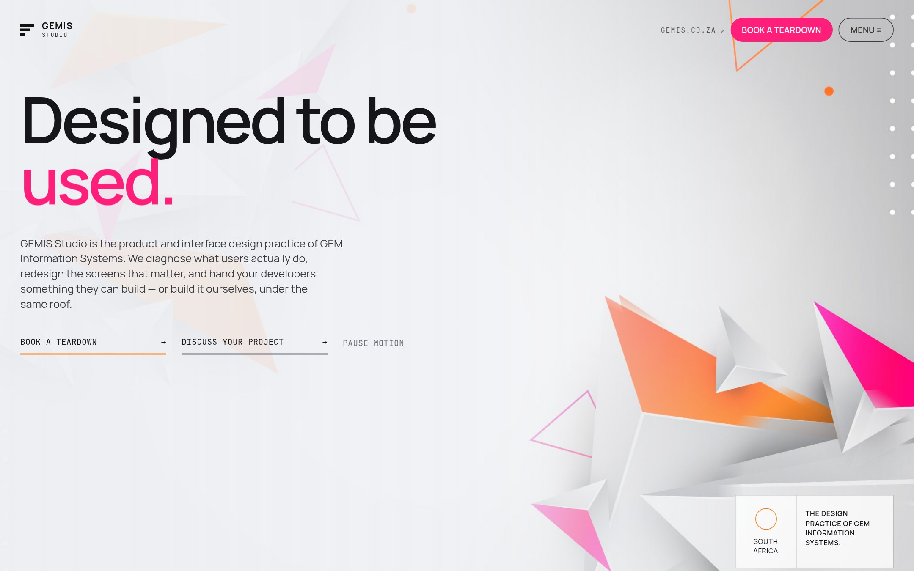
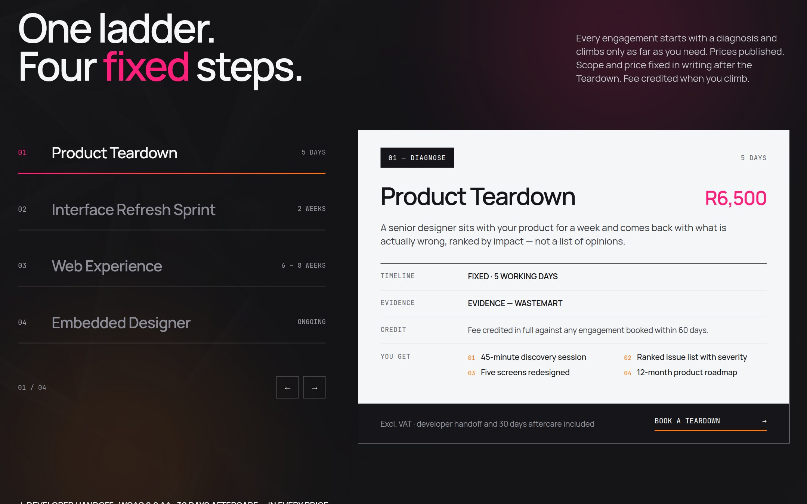
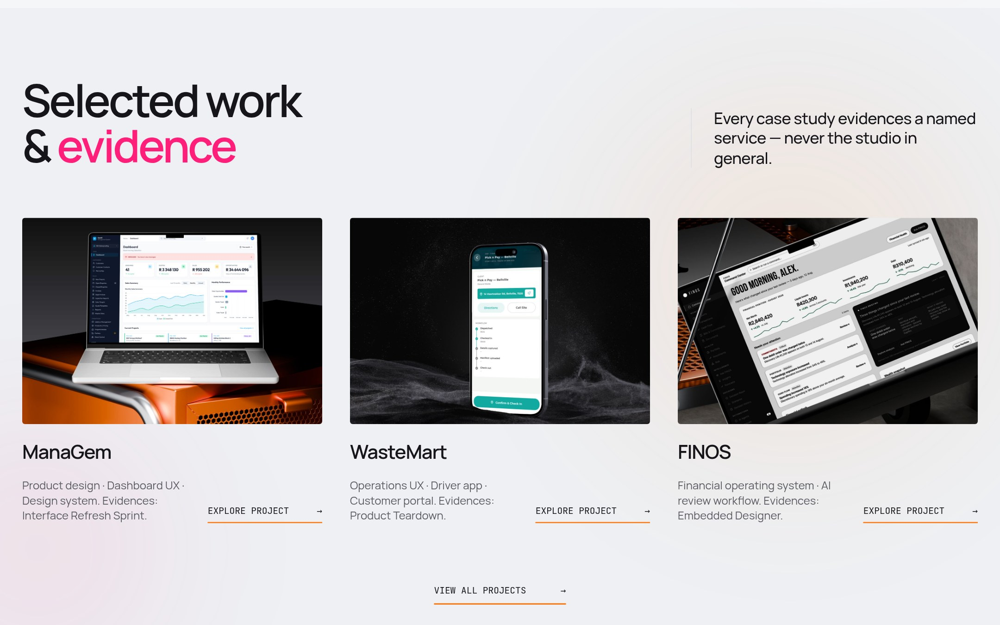
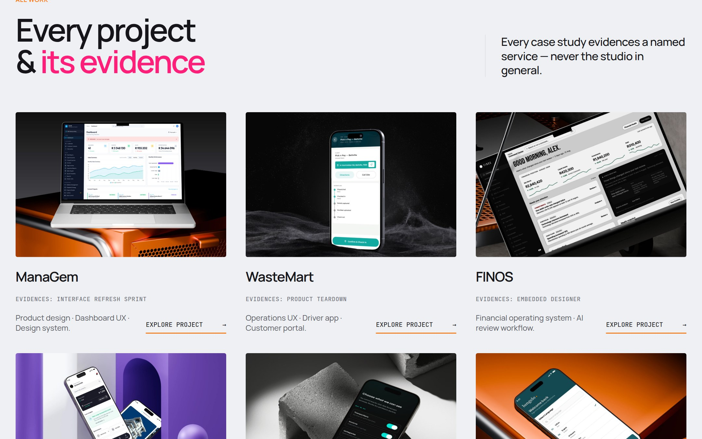
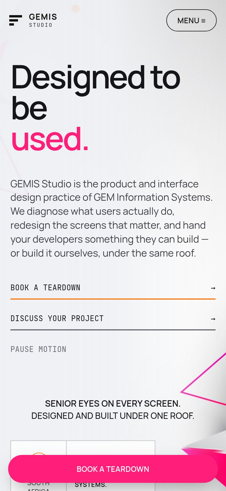
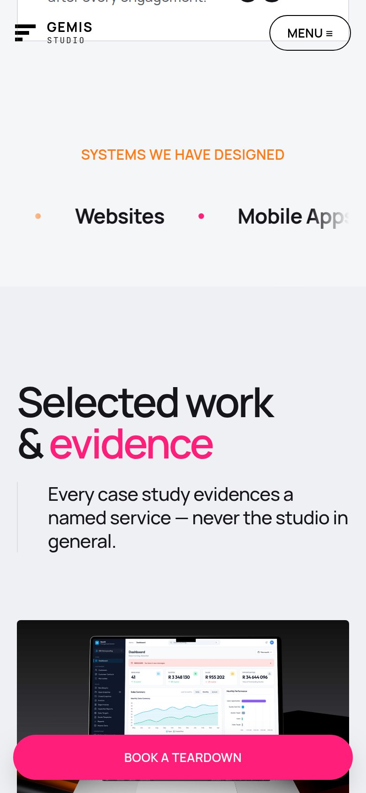
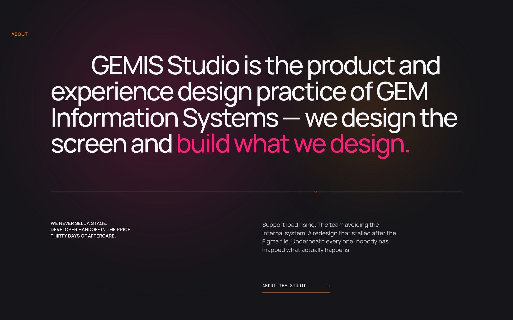

Developer handoff
Component spec, tokens and a handoff session with your developers — inside the price, not quoted after it.
GEMIS® Studio · Web experience case study
GEMIS Studio is the product and interface design practice of GEM Information Systems. It needed a site that did the selling a proposal usually does — publish the prices, name what you get, and prove the work — and that stayed readable for the crawlers, link previews and visitors its framework was quietly failing.

“Every case study evidences a named service — never the studio in general.”
The rule the whole site is built around. It decides what goes on the page, and what does not.
01 · Context
GEM Information Systems builds software. The design practice sits inside it — which is the studio's real advantage (designed and built under one roof, with developer handoff already in the price) and also the thing a prospect quietly doubts: is this a studio, or a department with a landing page?
The brief I set myself was to answer that on the page rather than in a call. Three things had to be true of the site before it was worth building: the prices are published, every claim is attached to named evidence, and the commitments are stated as rules, not adjectives.
02 · Making the offer legible
Most studio sites list services as a flat menu, which asks the visitor to work out where they belong. This one is a ladder: every engagement starts with a diagnosis and climbs only as far as the client needs. Scope and price are fixed in writing after the first step, and that first fee is credited when they climb.
Stated as terms the client can hold the studio to — not as a value proposition.
Component spec, tokens and a handoff session with your developers — inside the price, not quoted after it.
The Teardown fee is credited in full against any engagement booked within 60 days, so the diagnosis is never a sunk cost.
Aftercare follows every engagement. The studio is still there once the files are handed over.

03 · Evidence, not adjectives
A portfolio rail that just says “selected work” proves the studio can make things look good. It does not prove the thing a buyer is actually weighing: that the service they are about to pay for has been delivered before. So each case study on the site evidences one named step, and says which one.
| Project | What it was | Evidences |
|---|---|---|
| ManaGem | Product design · dashboard UX · design system | Interface Refresh Sprint |
| WasteMart | Operations UX · driver app · customer portal | Product Teardown |
| FINOS | Financial operating system · AI review workflow | Embedded Designer |


The three homepage projects are read out of the homepage at build time, not copied into the listing page. Change a name or a description in one place and the listing follows on the next build — the two cannot drift apart.
04 · The problem under the paint
The homepage is a client-rendered component, so the HTML actually served contained the template rather than the page — the pricing ladder, the case studies and the rotating headline all arrived as unresolved binding syntax. A visitor's browser filled them in and nobody noticed. Crawlers, link previews and anyone without JavaScript did not — they got the braces.
The fix was a build step. It renders the page in a headless browser exactly as a visitor's browser would, then writes the result into the served file. At load time a small boot script swaps that static markup for the element the runtime expects, and the interactive page carries on being the same component it always was — nothing is ever on screen twice. With JavaScript off, neither script runs and the static copy simply stays, with a scoped stylesheet that opens every ladder step and every comparison panel at once, since there is nothing left to switch between them.
What a crawler, a link preview or a no-JS visitor received where the price should be:
Prerendered markup in the file, swapped for the live component during parsing:
Once the homepage was prerendering, the work listing did not need the framework to exist. It ships with no React and no runtime — its chrome is lifted from the rendered homepage at build time and its links rewritten, so it stays identical without paying for the machinery.
Lighthouse performance, with no runtime shipped.
The same content with the interactive component loaded.
The build fails rather than let a single unresolved binding ship.
05 · The phone layout
The design export had no breakpoints at all. Below about 900px its two-, three- and four-column grids kept their desktop track sizes, so whole sections ran off the right edge — clipped by their own overflow rule, which is why it looked fine at a glance instead of obviously broken.
The repair is a layer at the end of the stylesheet in two queries: 900px for the grids, 700px for the header. The part worth keeping is what it hangs off. Targeting inline styles by substring looks correct and silently never matches — the browser rewrites what you author as repeat(3,minmax(0,1fr)) into repeat(3, minmax(0px, 1fr)). So every rule hangs off an explicit hook attribute instead, and the build checks each one is still present.


06 · Accessibility
Two components on the page switch content in place — the services ladder and the comparison section. Built straight from the export they were clickable divs, which means invisible to a screen reader and unreachable without a mouse. Both became proper tab interfaces with arrow-key movement, and every step and every comparison stays in the DOM so the content exists whether or not the switcher works.
The hero's rotating word is decoration, so the heading carries its full text and the rotator is hidden from assistive tech. Motion is a choice, not an ambush: there is a pause control beside the hero's calls to action, and the marquee stops on focus.

07 · See it running
The ladder is keyboard-navigable, the menu opens, the enquiry form is there. Turn JavaScript off and the page still reads.
08 · Reflection
Publishing the prices forced the scope to be honest. You cannot put a number on a page next to a vague deliverable — the ladder's four steps got sharper because each one had to earn its figure.
How much of “the site is finished” was untrue at the HTML level. It rendered perfectly in every browser I opened it in, and was still serving template syntax to everything that wasn't a browser.
Making the build fail loudly. A missing responsive hook or one surviving brace stops the whole thing shipping, which is irritating exactly once and then never lets a silent regression through again.
Put real numbers behind the ladder — how many visitors climb from Teardown to a booked engagement — and let that decide whether four steps is the right shape.
A studio site is not a brochure. It is the first deliverable the client ever sees you ship.